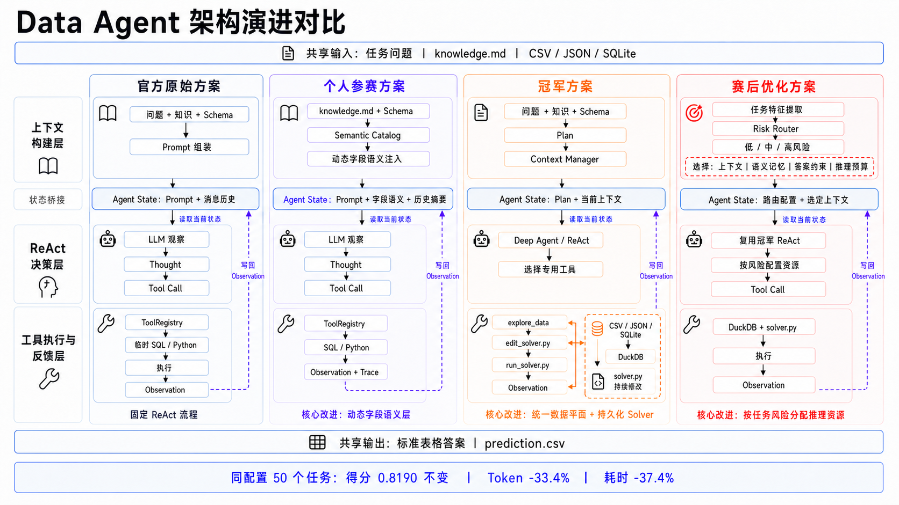

项目背景
DataAgent-Bench 要求 Agent 根据自然语言问题，结合业务知识和 CSV、JSON、SQLite、文档等数据完成查询与计算，最终提交标准表格答案，而不是只在对话中给出结论。
我先基于官方 ReAct 基线完成参赛系统，阶段一排名 54/703（Top 7.7%）；赛后复现冠军方案，再围绕推理成本和结果语义错误做优化。以下重点介绍结构化数据主链。

现有挑战
- 看见字段，不等于理解字段：缩写、枚举编码和隐含计算口径容易导致错误筛选、关联与聚合。
- 简单题也走重流程：相关性判断、全量知识和反复探索会增加模型调用与上下文成本。
- 程序运行成功，不代表答案正确：错误去重、聚合粒度、排序键和额外输出列，都可能让结果失分。
我的方法与贡献边界
| 阶段 | 工作内容 | 归属 |
|---|---|---|
| 参赛系统 | 在 ReAct 工具反馈中补充字段语义，并管理长程对话历史 | 个人参赛工作 |
| 程序求解底座 | DuckDB 多源查询、持久化求解程序、受限工具和执行反馈 | 复现上游冠军方案 |
| 赛后优化 | 风险路由 → 任务级知识检索与答案约束 → 确定性校验与修复 | 个人优化增量 |
优化没有替换冠军 ReAct 主循环，也不是用路由器直接决定 SQL 或 Python。路由决定的是要不要增加知识、检查规则和前置相关性调用，实际求解仍由 Agent 完成。
参赛阶段：字段语义增强
1. 建立表与字段的语义目录
把字段名、格式、取值含义和来源组织起来，避免模型只靠列名猜业务。
具体实现：建立表与字段的语义目录
- 结合任务知识、实际 Schema 与补充业务说明，按数据库、表、字段组织语义条目。
- 条目包含 meaning、data_format、value_meaning 和来源；缺失说明时支持配置化模型补全或启发式回退，推断内容不等同于原始数据事实。
- 目录缓存和构建锁避免重复生成；运行时按任务解析数据库，再按归一化表名查找。
2. 在工具结果中按需补充语义
模型查到哪张表、哪些列，就在对应 Observation 中看到解释。
具体实现：在工具结果中按需补充语义
- CSV / JSON 检查结果增加 table_role 与 column_semantics；SQLite Schema 检查则把解释附到对应列。
- 根据实际输出列筛选语义，不把整个目录直接塞入每轮上下文；缺失字段单独补全。
- 模型结合样例、类型和语义再生成查询；语义层增强工具反馈，并未替代 SQL 执行或结果验证。
数据走读
以下为简化教学示例，不是实际任务运行记录。
检查返回列：status 附加解释：meaning、value_meaning、semantic_source 模型：结合实际样例确认 status 编码，再选择过滤条件3. 区分工作上下文与完整轨迹
保留可审计的原始步骤，压缩模型下一轮实际读取的历史。
具体实现：区分工作上下文与完整轨迹
- 每步记录 action、action_input、observation、ok 与 model_usage。
- 上下文利用率达到配置阈值时压缩较早步骤；当前实现默认阈值 80%，保留最近 3 步。
- 摘要保留文件路径、字段、SQL、数值和待检查事项；原始轨迹用于复盘，摘要不能保证所有细节无损。
模块一：统一数据与程序求解底座
这一模块来自冠军方案。我的工作是复现与梳理其行为，为后续优化建立可比较的基线。
1. 统一注册数据
让数据探索与最终求解使用同一套数据加载、表名映射和 SQL 方言处理。
具体实现：统一注册数据
- CSV 通过 DuckDB 自动读取；记录型 JSON 转为 DataFrame 后注册；SQLite 表通过只读读取接入。文档需先结构化，不能直接当关系表查询。
- 维护标准表名、原名与别名映射；探索工具和求解子进程复用同一份运行时实现，而不是共享同一个进程内连接。
- 同一进程的 DuckDB 连接加锁，避免并发工具调用冲突；不支持的输入形态需记录或跳过。
2. 把推理写成可反复修改的程序
Agent 使用探索、读取、编辑、运行四类工具，将求解逻辑保存下来。
具体实现：把推理写成可反复修改的程序
- 探索工具返回表结构、查询样例与执行错误；模型据此编写 SQL 或 Python 计算。
- 读取与编辑工具围绕持久化求解程序工作，修改后继续运行同一个程序，而不是每轮重建临时代码。
- 运行工具固定执行求解程序，不暴露任意 Shell 命令参数；这收窄了工具动作，但不是完整安全沙箱。
3. 用执行反馈驱动下一轮
运行状态与输出自检共同决定 Agent 继续修复还是结束。
具体实现：用执行反馈驱动下一轮
- 非零退出或异常返回 FAILED；运行完成但未产出结果返回 NO OUTPUT；正常输出回读 CSV。
- 回传行列数、列名、非空数和前几行；折叠重复 Schema 与冗长异常栈，保留可操作的错误信息。
- 模型基于 Observation 继续修改；CSV 可读只证明产物有效，不证明业务答案正确。
模块二：风险路由与预算分配
在进入求解前，用可解释规则选择上下文策略，不额外调用一个路由模型。
1. 提取任务风险特征
读取问题文本、源文档是否存在和表类文件数量，累加风险分。
具体实现：提取任务风险特征
- 源文档 +3，指标计算 +3，业务语义或隐式枚举 +2，序数选择 +2，类别 tally +1。
- 出现关联表达且表类文件数不少于 3 时 +2；否则文件数不少于 6 时 +1。
- 这里统计的是 csv / json / db 目录中的文件数，不是数据库真实表数；它是低成本代理特征，不是学习得到的难度概率。
2. 生成可执行路由配置
低、中、高风险分别控制知识条数与答案约束等级。
具体实现：生成可执行路由配置
- 分数小于 3：不构建额外 Memory，contract=none。
- 分数 3–5：最多检索 2 条事实；指标任务使用 metric 约束，其余 minimal。
- 分数不少于 6：最多 4 条事实，使用 full 约束；保存 risk_score、risk_level、reason，方便回溯。
数据走读
以下为简化教学示例，不是实际任务运行记录。
问题含 average，有源文档 风险分 = 3（指标）+ 3（文档）= 6 use_memory = true memory_top_k = 4 contract_level = full3. 跳过没有筛选价值的模型调用
先检查是否存在选择空间，再启动文档或表相关性判断。
具体实现：跳过没有筛选价值的模型调用
- 源文档为 0 或 1 个时，直接确定候选集合；多文档才调用相关性 Agent。
- 仅在非低风险且表类文件数大于 3 时，启用表相关性判断；优化版默认 1 轮，可配置。
- 相关性筛选只影响上下文展示，不删除底层数据；判断失败保留全部表。低风险任务仍走 ReAct，不是绕过模型直接执行 SQL。
模块三：知识检索与答案约束
1. 把业务知识拆为带来源的事实
按标题、空行与列表项拆分知识，保留字段、关系、枚举、公式等类别。
具体实现：把业务知识拆为带来源的事实
- 每项保存 kind、heading、text、source 和检索词集合。
- 建立任务内词法索引，使用 IDF 提升区分度高的词；不依赖 Embedding 服务或向量数据库。
- 查询词做有限别名扩展，例如 average 对应 avg / mean；不进行开放式语义改写。
2. 检索少量相关知识并过滤冲突
结合词重合、稀有词与事实类型打分，防止相似表达召回相反口径。
具体实现：检索少量相关知识并过滤冲突
- 对显著词重合加权，对相反语义或维度冲突减分；例如 carcinogenic 与 non-carcinogenic 不应仅因词面相似而混用。
- 按路由选择 Top-2 / Top-4，渲染总长度上限 7000 字符，输出中保留来源。
- 当前版本仍保留原始 knowledge，并额外突出相关事实；不能将成本下降全部解释为删除全量知识。
3. 在生成前明确答案约束
根据风险等级，提醒模型核对输出属性、聚合粒度与关联方式。
具体实现：在生成前明确答案约束
- minimal：只输出题目要求的列，检查 CSV 的形状和值。
- metric：区分 AVG / SUM / COUNT，明确百分比分母、周期粒度与极值是否需要聚合。
- full：进一步核对枚举、JOIN 基数、排序键与去重。它是 Prompt 中的检查要求，不是程序强制保证。
数据走读
以下为简化教学示例，不是实际任务运行记录。
问题：最低单笔成本对应的活动 约束：先找原始 cost 最小记录，再关联活动 不要擅自改为：按活动 SUM(cost) 后排序
模块四：确定性校验与修复
1. 从问题、程序和结果中查找已知错误
只检查有限模式，不调用 Gold 答案，也不让另一个模型主观判分。
具体实现：从问题、程序和结果中查找已知错误
- 检查直接极值问题中是否出现未要求的 SUM / AVG。
- 检查原子等序数标识符是否使用 LIKE '%_4' 一类模式：下划线是通配符，并非字面分隔符。
- 检查特定类别 tally 问题是否返回重复行；规则基于文本和正则，不是 SQL 语义证明器，存在误报与漏报。
2. 能局部修复就修复，否则给出明确反馈
区分重复类别与需要重新计算的查询错误。
具体实现：能局部修复就修复，否则给出明确反馈
- 适用类别去重规则时，对完整输出行保序去重，保留首次出现的行。
- 错误聚合、序数解析等问题不直接猜答案，而是返回修改方向，再交给 Agent 重算。
- 内层继续编辑—执行；完整尝试失败时恢复初始脚手架、清理旧结果并携带校验反馈重试，避免把残留文件当成新结果。
数据走读
以下为简化教学示例，不是实际任务运行记录。
输入行：[('C',), ('H',), ('C',)] 仅在类别集合规则适用时： 输出行：[('C',), ('H',)] 若任务要求计数或保留记录，不可直接套用去重3. 用任务级对照检查效果与回退
联合记录得分、Token、轮数和时间，不能只看总平均分。
具体实现：用任务级对照检查效果与回退
- 使用同一任务集合、模型配置和评分程序比较基线与优化版。
- 按 task_id 对齐结果，检查修复与回退，并单独解释复用结果、长尾修复和重试开销。
- 本轮不重新调用模型跑比赛；页面数字来自已有实验记录，实验口径在下方列明。
最终结果
参赛成绩：阶段一 54/703。以下为赛后 50 题本地对照，不是官方榜单提升，也不与冠军仓库的另一组离线结果混用。
| 指标 | 冠军方案复现基线 | 赛后优化版 | 变化 |
|---|---|---|---|
| 平均分 | 0.8190 | 0.8190 | 持平 |
| 完全正确 | 40/50 | 40/50 | 持平 |
| 总 Token | 15,987,105 | 10,649,537 | −33.4% |
| ReAct 轮数 | 688 | 619 | −10.0% |
| 完整历史流程耗时 | 约 94.7 min | 约 59.3 min | −37.4% |
任务级修复：19、379、418；回退：173、199、303。总体持平不代表每道题都不退化。
实验口径与复现限制
- task_25、task_379 使用此前已验证结果；task_418 在长尾运行后由确定性规则补齐。
- 59.3 分钟使用包含历史流程的保守口径，不替换为仅主批次的 52.7 分钟。
- 这些数字是已有本地记录，不是本次重新运行，也不是一次空缓存、无人工介入的完整测试证明。
局限与下一步
- 路由是启发式规则：文件数不等于表数，词面特征也可能漏掉隐式复杂任务；需要在新任务上检查错分。
- 知识增强并非越多越好：原始知识仍保留，Top-k 召回也可能引入错误口径；需要逐项消融区分各模块贡献。
- 校验覆盖有限：目前只处理少量已知模式，程序成功和校验通过都不等于业务正确。
- 下一步先补证据：从空缓存完整重跑 50 题，再用新 Holdout 和多次运行检查质量、成本与任务回退，避免对这批任务过拟合。